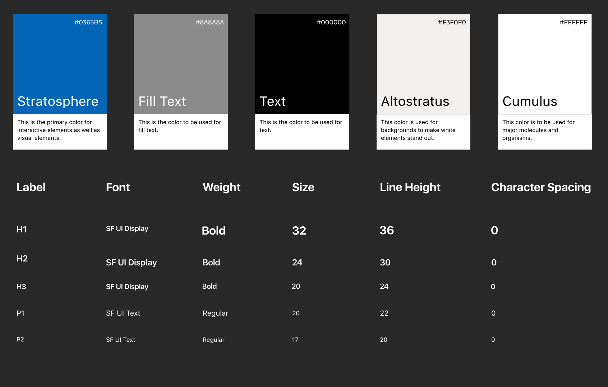
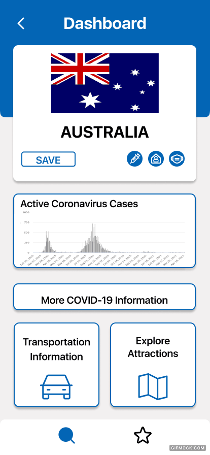
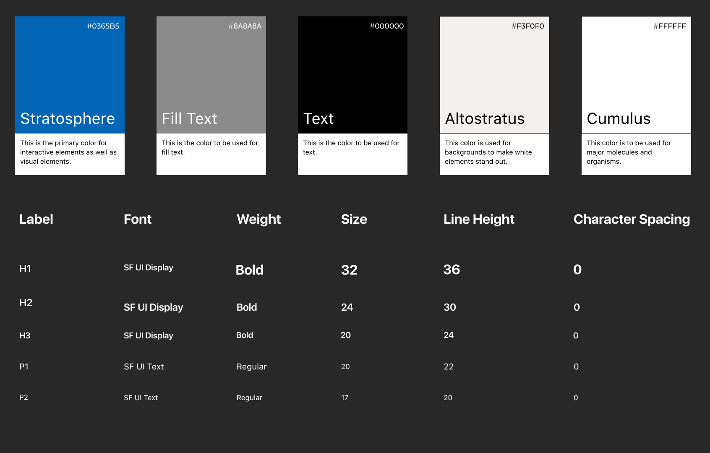
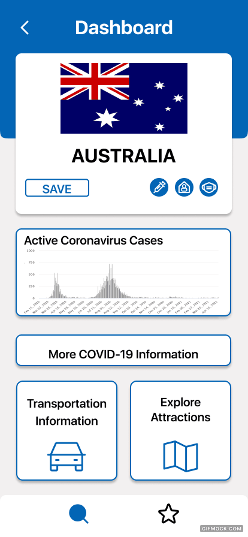

UX Festival Slo Hackathon
Mobile App Design Process
Hackathon Finalist | April 2021
UX Festival selected 200 undergraduate students from around the United States to participate in a one-week-long competition.
The Challenge
Create a mobile or web application that solves the problems of a post-COVID world. Over the course of one week, I worked in a team of 3 to develop user personas, conduct research, ideate, and create an interactive prototype to present to a panel of judges.
My Role
I took on the roles of lead designer and communicator. As the designer, I facilitated brainstorming sessions, ideation sessions, and organized the creation of our prototype. As the communicator, I presented our finished product to a panel of six judges and answered questions during a Q&A session.
Style Guide
COLORS:Destination’s color palette is checked with an accessibility audit tool and informed by color psychology research.
FONT: The font, San Francisco, is clean, flexible, and standard across Apple iOS systems. It was designed to be readable on small screens. CollaborEat uses the SF typeface because it aligns with the iOS design philosophy.
 


